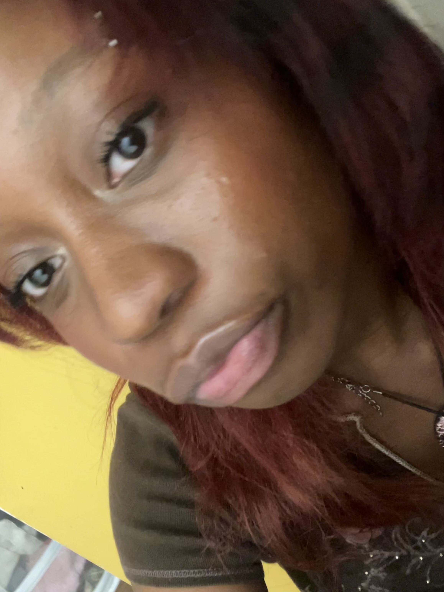

Welcome to my portfoilio ^_^

My work integrates imaginative perspectives and nostalgic references with reality. I like to counter the connotation that “wishful thinking” is futile by illustrating these hopes. Through video and photo editing, composition, the past meshing with the present serves as a reminder that hope is not futile. I feel these themes are impactful to the viscera and provide an example of preserving history for a progressive future. I strive to use these images to develop historical and social subtexts.